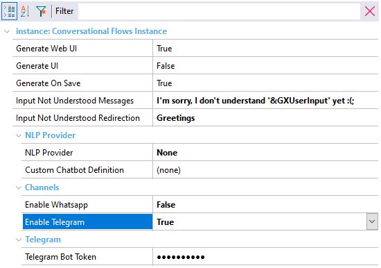

Enables integration with Telegram. Description
When this property is set to TRUE, the chatbot is integrated with Telegram. Additionally, the user will be offered the option to insert the Telegram Bot Token property, and the objects necessary (Chatbot resources) will be imported into the knowledge base for the implementation. 
Run-time/Design-timeThis property applies only at design-time. AvailabilityThis property is available since GeneXus 17 upgrade 4. See Also
|
| Backlinks |
| Telegram Bot Token property |